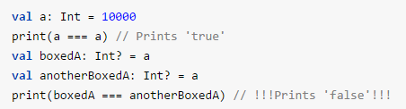
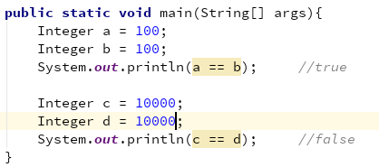
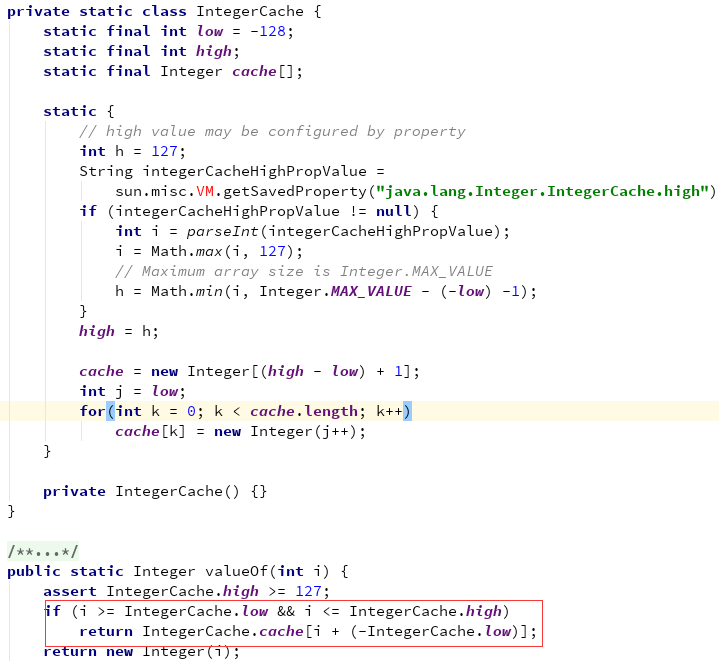
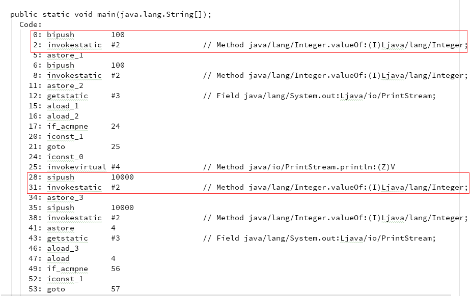

自google宣布kotlin为android开发的首选语言后，这几天被kotlin给刷屏了。作为一个屌丝码农，咱也得紧随其后，老老实实的学kotlin吧。
学习kotlin文档里的例子的时候，其中有一个关于Int装箱的代码，具体内容为：
但由于本人粗心大意（在此自我检讨一下），把其中的具体数值10000写成了100，在我看来，结果应该是一样的，应该与Demo一致，第一个打印为true，第二个打印为false。但是，结果却与我想象的不一样，第一个为true没有问题，第二个也是true。怎么也想不通为何Demo里是false，而我的代码却是true，难道仅仅只是因为我把10000改成100的缘故吗？为了验证这个猜测，于是，我把100又改回了10000，再次运行，发现打印结果又成了false。这个时候，我凌乱了，为什么100打印true，而10000打印false呢？二者除了具体数值不一样以外，没有任何区别了。看来，问题就出了具体数值上了。
kotlin是运行在JVM上的，与java文件一样，编译成字节码，java里的Integer，也有这个现象吗？于是我写了一个简单的测试代码，具体代码为：
果然，结果与kotlin一致。看来，真与具体数值有关。于是，我上网搜索了一下，找到了具体原因。100在自动装箱成Integer对象的时候，调用了Integer的valueOf(int i)方法，而打开了Integer源码后，发现了这一段代码，在-128和127之间，是有缓存的，直接返回了缓存里的Integer对象。而其他的数值，则是直接创建了一个Integer对象。这就解释了为何Integer的a对象和b对象相同，而c和d对象则不同。
到此，已经解释了为何Integer的a、b对象为何相同，而c、d对象为何不同。但是，还有一点没搞清楚的地方，为什么自动装箱时调用了Integer的valueOf(int i)方法呢？在Integer源码里，好像并没有这样的调用。于是，继续搜索Integer自动装箱，结果是：自动装箱是编译时的行为。那么，使用javap恢复成jvm指令，不就可以看到原因了吗？
由此可以看出，在自动装箱时，调用的是Integer的valueOf(int i)方法。至此，所有疑问全部解开了。特做个记录，为自己的学习，留下一个足迹。欢迎拍砖，谢谢！